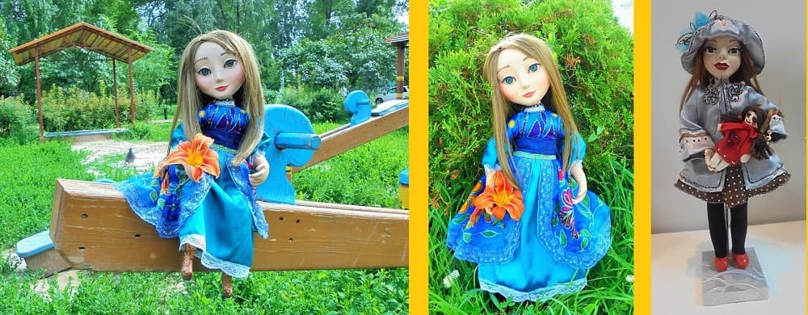

STILL IN MY CHILDHOOD
I LIKED TO PAINT
I LIKED TO PAINT
In childhood I had a lot of hobbies. The creative process really fascinated me. I liked to paint, write stories, composed music. After some time, I again took up painting, made several handmade dolls and wrote several short stories.
When bright images come to life on paper and the white sheet turns into a separate frame from the movie of someone's life - I understand that this is my inspiration. Having embodied on paper someone's image, I get a new impetus to new images that seek to incarnate in the real world, conveying messages, and sometimes encouraging doing something, and maybe I just could see a part of someone's life.Thoughtful images on portraits reveal the meaning of their life, I observe their views on this world and their eyes reveal their secret for a short moment. My characters are people from the real world and characters invented by me, created from several images and my ideas about people.
